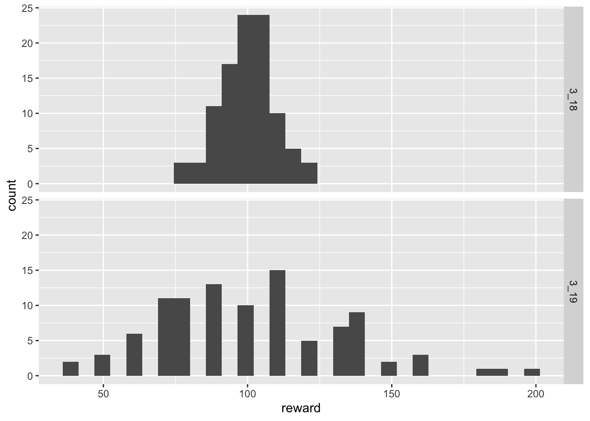

simulate_loot = function(n_maps, lambda, reward, chance_of_reward){
rewards = numeric(n_maps)
map_counter = 1
while(map_counter < n_maps){
# decide when you get the next reward
next_reward_map = rpois(1, lambda)
map_counter = map_counter + next_reward_map
# increment map reward if:
# - next reward is < number of maps run
# - we received a 'rewarding' reward
if(map_counter < n_maps && runif(1) < chance_of_reward){
rewards[map_counter] = rewards[map_counter] + reward
}
}
rewards
}PoE Loot Analysis
Background
In the 3.19 patch of Path of Exile, GGG stated that one of their goals was for players to encounter rare monsters less often but to be rewarded more when they do.
Philosophy Two: Players should fight fewer Rare Monsters at once, but they should be more challenging and rewarding.
While many have stated their agreement with this view, there has also been general unhappiness with the rewards ‘schedule’. Many players believe that loot has been isolated to infrequently appearing enemies (so-called ‘loot goblins’). What has been missing from this discussion is any quantitative analysis of the player experience and the factors involved therein. That gap is what this white paper aims to begin to fill. With this analysis we can begin to understand the effects of GGG’s changes and why it is so noticeably different than patch 3.18.
Simulation Overview
The idea is to simulate player loot experiences in both patches. Here are how the patches compare:
Patch 3.18: more frequent rewards that are less rewarding
Patch 3.19: less frequent rewards that are more rewarding
We can model this with the following algorithm:
rewards = 0
while maps_run < total_maps:
next_reward = rPois(lambda)
maps_run += next_reward
rewards += reward Let us define this as \(cPois(\lambda, \textrm{reward})\). This is known as a compound Poisson process. We first produce a random deviate to decide when we next receive a reward, and then decide what amount of a reward we receive.
Simulating Rewards
What is a reward?
A reward is some amount of items or currency that drops from an enemy when it is killed.
How do we quantify a reward?
This is the main difficulty of any analysis of loot for the simple fact that whether a reward is ‘rewarding’ depends on the player. Some players may be leveling their character and pick up rares they need to fill in their remaining gear. Others may have a strict filter which shows only specific items. For example, BalorMage ran a Chayula breach strategy in which he primarily picked up breach splinters and breachstones. In this case, anything that is not related to his strategy has zero value (it is not ‘rewarding’).
In order to keep things simple, I will imagine that whenever a reward is received, it has a fixed value. (If one wished to extend the following results, one could replace the fixed value with any distribution bound at 0. For example, a uniform distribution \(Unif(0, a)\) for some \(a > 0\).)
Reward Expectations
Consider the following model specifications:
Patch 3.18: \(cPois(1, 1)\)
Patch 3.19: \(cPois(10, 10)\)
How do these models compare?
In the first model, we expect to receive a reward on average every map with a reward value of 1. In the second model, we receive a reward on average once every ten maps with a reward value of 10.
If we consider the limiting distributions of these two models (if we were to run \(\infty\) maps), the expected values converge.
The crucial fact here is that players cannot run an infinity of maps, and so we must understand what the behavior of these processes are under more realistic conditions.
Model Code
Consider the following code:
The only thing new here is chance_of_reward. This is the probability that the reward we receive is rewarding.
Preliminary Results
Consider the scenario where the chance that a reward is rewarding is 1. This can be considered the best case scenario.
Let us compare the results of 100 players running 1000 maps in each patch.
library(tibble)
set.seed(1234)
# parameters
chance_of_reward = 1
n_maps = 1000
n_reps = 100
# simluations
sim_318 = replicate(n_reps, simulate_loot(n_maps, 1, 1, chance_of_reward)) %>% as.data.frame %>% tibble
sim_319 = replicate(n_reps, simulate_loot(n_maps, 10, 10, chance_of_reward)) %>% as.data.frame %>% tibbleLet us check the results to make sure the expected values are the same:
summary(apply(sim_318, 2, sum)) Min. 1st Qu. Median Mean 3rd Qu. Max.
911.0 978.2 1002.0 1002.6 1022.5 1091.0 summary(apply(sim_319, 2, sum)) Min. 1st Qu. Median Mean 3rd Qu. Max.
920.0 977.5 1000.0 995.5 1012.5 1060.0 We see that the numerical summaries of the distributions are approximately equal as expected. This histograms of the distributions are also similar.
library(ggplot2)
hist_data = tibble(
label = c(rep("3_18", n_reps), rep("3_19", n_reps)),
reward = c(apply(sim_318, 2, sum), apply(sim_319, 2, sum))
)
ggplot(hist_data, aes(reward)) + geom_histogram() + facet_grid(rows = vars(label))`stat_bin()` using `bins = 30`. Pick better value with `binwidth`.We can summarize the player experience of running maps graphically as well. This will give us an impression of how often players are receiving rewards.
data = tibble(
label = c(rep("3_18", n_maps), rep("3_19", n_maps)),
reward = c(cumsum(sim_318$V1), cumsum(sim_319$V1))
)
ggplot(data, aes(x = rep(seq_len(n_maps), 2), y = reward, colour = label)) +
geom_line() +
theme_minimal() +
labs(x = "Map", y = "Cumulative Reward")From these results we see that under these conditions, rewards are fairly comparable between patches.
Note that we are only comparing one of the 1000 simulations, so there is some inherent variability that is not captured here. It is only meant to give you a sense of how the two patches compare under ideal conditions.
Aside
To make our modeling easier, let us wrap the simulation, summary, and plots into one function.
analyze = function(chance_of_reward, n_maps, n_reps){
# simluations
sim_318 = replicate(n_reps, simulate_loot(n_maps, 1, 1, chance_of_reward)) %>% as.data.frame %>% tibble
sim_319 = replicate(n_reps, simulate_loot(n_maps, 10, 10, chance_of_reward)) %>% as.data.frame %>% tibble
# print summaries
print(summary(apply(sim_318, 2, sum)))
print(summary(apply(sim_319, 2, sum)))
# prepare histogram data
hist_data = tibble(
label = c(rep("3_18", n_reps), rep("3_19", n_reps)),
reward = c(apply(sim_318, 2, sum), apply(sim_319, 2, sum))
)
# create histograms
p1 = ggplot(hist_data, aes(reward)) + geom_histogram() + facet_grid(rows = vars(label))
# prepare data for line plotting
line_data = tibble(
label = c(rep("3_18", n_maps), rep("3_19", n_maps)),
reward = c(cumsum(sim_318$V1), cumsum(sim_319$V1))
)
# plot
p2 = ggplot(line_data, aes(x = rep(seq_len(n_maps), 2), y = reward, colour = label)) +
geom_line() +
theme_minimal() +
labs(x = "Map", y = "Cumulative Reward")
# print plots
print(p1)
print(p2)
}Adjusting Chance of Reward
Now let us consider scenarios in which the reward is not always rewarding. This is more realistic to the player experience. (For example, Drought Bringer is not rewarding after the first time it is experienced.)
Chance to be Rewarded = 50%
analyze(0.5, 1000, 100) Min. 1st Qu. Median Mean 3rd Qu. Max.
453.0 484.0 499.0 500.6 512.2 563.0
Min. 1st Qu. Median Mean 3rd Qu. Max.
350.0 460.0 490.0 486.8 520.0 590.0 `stat_bin()` using `bins = 30`. Pick better value with `binwidth`.While the numerical summaries show that the expected values of returns are approximately similar, the graphics show that the variability of rewards in patch 3.19 has increased dramatically. This means that some players are receiving many more rewards than in patch 3.18 while others are receiving much less.
Chance to be Rewarded = 10%
A similar situation plays out when we reduce the chance to be rewarded further.
analyze(0.1, 1000, 100) Min. 1st Qu. Median Mean 3rd Qu. Max.
76.0 94.0 101.0 100.1 106.0 121.0
Min. 1st Qu. Median Mean 3rd Qu. Max.
40.0 80.0 100.0 101.8 120.0 200.0 `stat_bin()` using `bins = 30`. Pick better value with `binwidth`.
Reducing Map Counts
Thus far the results consider limiting distributions where players are running 1000 maps. For some players this is probably not realistic. Let us consider situations in which players only running 100 maps with 50% chance of receiving a rewarding reward.
analyze(0.5, 100, 1000) Min. 1st Qu. Median Mean 3rd Qu. Max.
31.00 45.00 49.00 49.31 53.00 74.00
Min. 1st Qu. Median Mean 3rd Qu. Max.
0.00 40.00 50.00 47.19 60.00 100.00 `stat_bin()` using `bins = 30`. Pick better value with `binwidth`.Amazingly, there are players who actually received no rewards in 100 maps. This situation becomes markedly worse when the reward chance is reduced further.
analyze(0.1, 100, 1000) Min. 1st Qu. Median Mean 3rd Qu. Max.
2.000 8.000 10.000 9.833 12.000 21.000
Min. 1st Qu. Median Mean 3rd Qu. Max.
0.00 0.00 10.00 9.55 10.00 40.00 `stat_bin()` using `bins = 30`. Pick better value with `binwidth`.In this case perhaps a third of players who would normally have received a healthy stream of rewards in patch 3.18 now receive nothing.
Conclusions
GGG’s sought to maintain the current overall amount of rewards, but to move those rewards to less frequent but more rewarding rare monsters. While their goal is met in the long run averages, simulations of more realistic player experiences shows that this often produces scenarios in which large numbers of players overall receive much less reward than the previous patch.